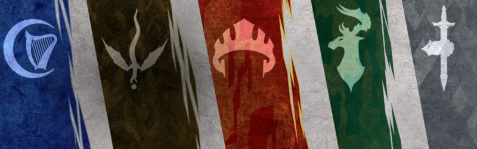

Organisations
Voici cinq organisations des Royaumes Oubliés que des personnages pourraient rejoindre : l'Alliance des seigneurs, l'Enclave d'émeraude, les Ménestrels, l'ordre du Gantelet et le Zhentarim. Le culte du Dragon est pour sa part plutôt réservé aux opposants des PJ.
Rangs
Ces cinq factions sont toutes organisées en 5 rangs hiérarchiques, bien que chacune d'elles nomme les membres d'un rang particulier d'une manière qui lui est propre.
Initié
Ce premier rang est celui que reçoivent les nouveaux membres lorsqu'ils rejoignent l'organisation.
Agent
Le deuxième rang est réservé aux membres qui ont prouvé leur loyauté à l'organisation. On leur assigne alors plus de responsabilités et un mentor, membre de haut rang de l'organisation, leur est généralement désigné. De plus, chaque organisation propose à ses agents des sortes de formations qui permettent, au bout d'une période variant entre 125 et 250 jours et pour un coût respectif de 375 à 250 pièces d'or, de gagner la maîtrise d'un outil considéré comme utile pour l'organisation (voir S'entraîner dans le chapitre Temps morts). La description de chaque organisation indique quelles formations elles sont en mesure de proposer.
Fidèle
Les fidèles sont les membres qui ont acquis la confiance de leur organisation. Aventuriers de niveau 5 minimum, ils ont accès à des informations secrètes et confidentielles. Lors de la cérémonie qui consacre l'accès à ce rang, il n'est pas rare que le fidèle reçoive de la part de sa hiérarchie un objet magique dont la valeur est directement proportionnelle aux dons que celui-ci a auparavant effectué pour le compte de son organisation. Ces dons sont généralement compris entre 500 et 5000 pièces d'or et l'objet magique peut aller d'une arme ou d'un bouclier +1 à une armure +1.
Mentor
Aventuriers de niveau 11 minimum, un mentor porte la voix de l'organisation sur le terrain. Les membres de ce rang ont généralement un ou plusieurs initiés ou agents sous leurs ordres. Ils ont également accès, moyennant finances, à des sorts comme rappel à la vie, résurrection ou résurrection suprême, exécutés par des clercs rattachés à l'ordre.
Maître
Les maîtres, aventuriers de niveau 17 minimum, font partie du cercle des dirigeants d'une organisation. Les membres de ce rang pèsent personnellement sur les décisions prises au plus haut niveau de l'ordre.

Basé sur les documents de l'Adventurers League